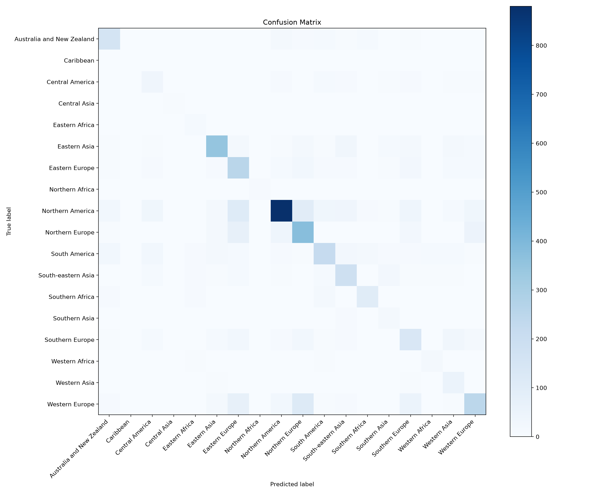
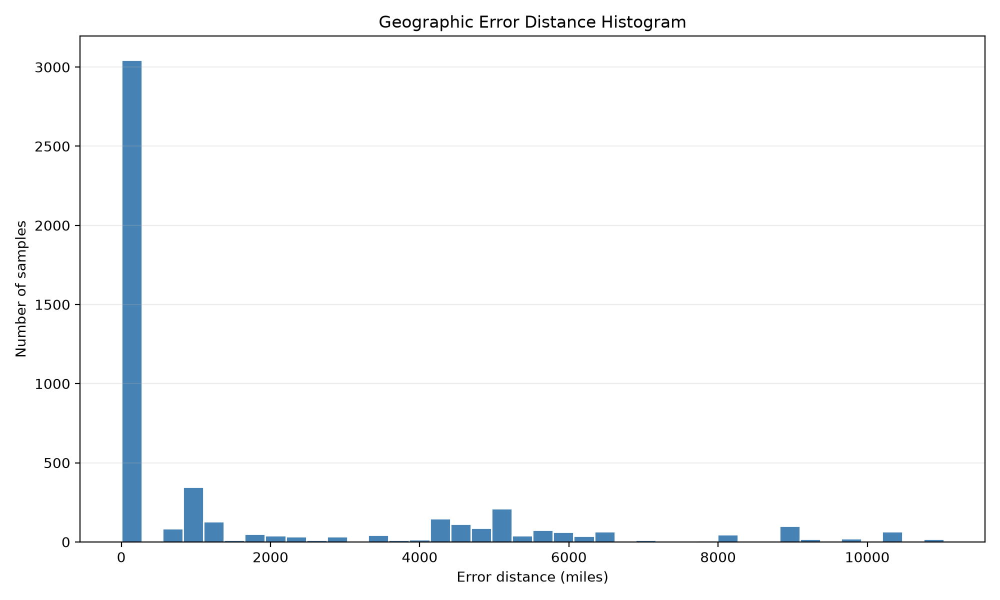

Project Intent
GeoLocate predicts geographic sectors from street-view style images. Instead of directly predicting country labels, the system groups countries into regional sectors to reduce label sparsity and improve stability for underrepresented regions. The model is strictly visual and is not specifically engineered to detect text artifacts such as street signs, license plates, or other metadata-like location cues.
Design Process In One View
The model evolved through six main decision gates. Each gate introduced one controlled change, then tracked its effect on test accuracy and geographic quality.
Model Structure Walkthrough
Each row is one tested structure from baseline to the final selected model.
Final Model Performance
Focused on strong signals: overall test accuracy, geographic error profile, and strongest per-sector accuracies.
Evaluation Visuals


Reproducibility
To update this website after a new run, only edit website/assets/results.json.